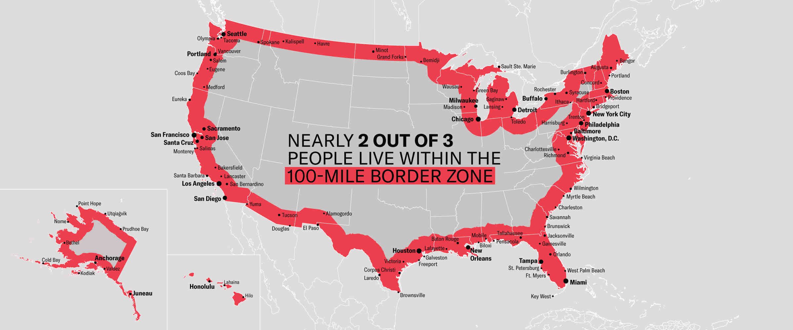

Lab 2: Distances and Projections
The Geometry of Place: Spatial Analysis Skills for Environmental Science
The spatial analysis skills in this lab — building sf objects from multiple sources, transforming coordinate reference systems, computing distances to boundaries, and identifying features within threshold zones — are the same operations you will apply to watersheds, river networks, gauge networks, and dam inventories throughout this course.
Before those datasets become available, we need the techniques to be automatic. This lab builds them on a familiar, nationally relevant dataset: US cities. Every operation you perform here — st_union, st_combine, st_cast, st_distance, st_transform, gghighlight — transfers directly to vector water resources data.
The payoff is Q4: a real-world application of these spatial skills to a live federal policy question that affects more Americans than most people realize. When you finish, you will have the tools to apply the same analysis to any spatial threshold problem.
This lab connects directly to recent policy discussions about border enforcement and the so-called “100-mile” border zone — for example, shifts in migration policy after the end of the pandemic-era Title 42 expulsions in 2023 have renewed attention on how proximity to the border affects enforcement, resource allocation, and civil liberties (see recent coverage: https://www.reuters.com/world/us/us-ceases-using-title-42-pandemic-order-control-migration-2023-05-11/).
More recent operational discussions involving ICE and border enforcement through 2025–2026 have emphasized how interior and border-zone enforcement strategies depend on distance-to-border metrics; readers can consult summaries on civil-liberties implications (ACLU) or policy analyses that discuss the “100-mile” enforcement footprint for background: https://www.aclu.org/know-your-rights/border-zone, https://www.americanimmigrationcouncil.org/blog/border-patrol-charlotte-atlanta-100-mile-zone/.
Set-up
Repository
- Navigate to your
csu-523crepository - Create a new Quarto file called
lab-02.qmd - Populate its YAML:
---
title: "Lab 2: Distances and Projections"
subtitle: 'ESS 523c: Environmental Data Science Applications'
author:
- name: Your Name
email: your@colostate.edu
format: html
---If you dont have a project _quarto.yml file, be sure to set the output directory to docs.
Libraries
Install any missing packages with install.packages("packagename"), then load:
pacman::p_load(
tidyverse, sf, units, tigris, rnaturalearth, gghighlight, ggrepel, flextable
)
options(tigris_use_cache = TRUE)
Tip
Optional hints and worked examples are available if you need extra help: hints/lab-02-hints.qmd
Background
In this lab four main spatial skills are covered:
- Building
sfobjects from R packages and CSV files — Q1 - Manipulating geometries and coordinate systems — Q2
- Calculating distances using geometry type selection — Q2
- Visualizing spatial patterns with
ggplot2,gghighlight, andggrepel— Q3 & Q4
Why these skills matter for water resources
Computing distance from a point to a boundary is one of the most common operations in spatial hydrology: distance from a gauge to a watershed outlet, distance from a city to the nearest floodplain, distance from a well to the nearest stream. The mechanics are identical regardless of what the features represent — master them here and they transfer everywhere.
Question 1: Build Your Spatial Dataset
For this lab we need three datasets:
- CONUS state boundaries (1.1)
- North American country boundaries — US, Mexico, Canada (1.2)
- All US cities (1.3)
1.1 Define a Projection
Distance calculations require a projected coordinate system that minimizes distance distortion at the scale of CONUS. We will use the North America Equidistant Conic:
eqdc <- '+proj=eqdc +lat_0=40 +lon_0=-96 +lat_1=20 +lat_2=60 +x_0=0 +y_0=0 +datum=NAD83 +units=m +no_defs'This PROJ string defines:
| Parameter | Value | Meaning |
|---|---|---|
+proj=eqdc |
— | Equidistant Conic projection |
+lat_0=40 |
40°N | Latitude of projection center |
+lon_0=-96 |
96°W | Central meridian |
+lat_1=20, +lat_2=60 |
20°N, 60°N | Standard parallels |
+datum=NAD83 |
— | North American Datum 1983 |
+units=m |
— | Output in meters |
Distortion is minimized between the two standard parallels — 20°N and 60°N encompasses all of CONUS, making this projection well-suited for national-scale distance analysis.
1.2 CONUS State Boundaries
Use tigris::states() to get US state boundaries, filter to CONUS, and transform to the equidistant projection.
Tip
tigris is the modern, CRAN-stable replacement for USAboundaries. It pulls boundaries directly from the US Census Bureau TIGER/Line files. Load the data with states(cb = TRUE, progress_bar = FALSE). Filter the state codes (STUSPS column) to exclude Alaska, Hawaii, and US territories, then apply st_transform(eqdc) to reproject.
1.3 North American Country Boundaries
Use rnaturalearth::ne_countries() to get country boundaries for the United States, Canada, and Mexico.
Tip
ne_countries() returns an sf object directly when you specify returnclass = "sf". Filter on the admin column to keep only the three countries you need, then transform to eqdc. See ?rnaturalearth::ne_countries for available scales and parameters.
1.4 US City Locations
Go to simplemaps.com/data/us-cities and download the free basic dataset into your data/ directory.
Read it in with readr::read_csv() and explore it — understand what columns are available before proceeding.
The raw data is tabular — coordinates are stored as numeric columns, not geometry. Convert it to a spatial object using st_as_sf(), specifying which columns hold X and Y coordinates and what CRS they use. Raw lat/lon from a CSV is almost always WGS84 (EPSG:4326).
Tip
After creating the sf object, you’ll need to remove rows that fall outside CONUS. The st_union(states) geometry provides a boundary to filter against. See ?sf::st_filter for how to select geometries that intersect or fall within a bounding polygon.
Verify all three datasets before proceeding
Run these checks before moving to Q2 — a CRS mismatch here will silently corrupt every distance calculation downstream.
# All three must return the same CRS
st_crs(states) == st_crs(countries)
st_crs(states) == st_crs(cities)
# Row counts should be reasonable
nrow(states) # should be 48
nrow(cities) # should be ~28,000Question 2: Distance Calculations
Here we calculate the distance from each US city to four boundaries:
- The US national border (coastline + land borders, resolved)
- The nearest state border (internal boundaries preserved)
- The Mexican border
- The Canadian border
In all cases, since we want distance to a border (a line), we must cast our polygon geometries to MULTILINESTRING before computing distances. The choice of st_union vs. st_combine determines whether interior boundaries are dissolved or preserved — a distinction that matters for questions 2.1 and 2.2.
The geometry type determines the answer
POLYGON/MULTIPOLYGON→ distance to the interior is 0 (you’re inside the area)MULTILINESTRING→ distance to the boundary line — what we actually want
# Wrong: distance to a polygon
st_distance(city_point, state_polygon) # returns 0 if city is inside
# Right: distance to the border
st_distance(city_point, state_polygon |> st_cast("MULTILINESTRING"))2.1 Distance to US National Border (km)
The national border is the resolved outer boundary of all states — internal state lines dissolved, only the coastline and land borders remain.
Tip
Use st_union() to merge all state polygons into a single boundary (dissolving internal borders), then cast to MULTILINESTRING so distances are measured to the border line rather than interior. Compute distance using st_distance() and convert the result to kilometers using set_units() from the units package — this ensures clean numeric output and correct unit handling downstream.
Store the result as a new column dist_to_border in your cities data frame. Produce a flextable of the 5 cities farthest from the national border — include city name, state, and distance.
2.2 Distance to Nearest State Border (km)
The nearest state border uses preserved internal boundaries — we want every state line, not just the outer edge. Use st_combine() which keeps all boundaries, then cast to MULTILINESTRING.
Store as dist_to_state. Produce a flextable of the 5 cities farthest from any state border.
Tip
Think carefully about why the answers for 2.1 and 2.2 differ. The city farthest from the national border might be close to a state line. The city farthest from any state line must be far from all internal AND external borders.
2.3 Distance to Mexico (km)
Isolate Mexico from your countries object. Cast to MULTILINESTRING. Compute distance from each city to the Mexican border. Store as dist_to_mexico. Produce a flextable of the 5 cities farthest from Mexico.
2.4 Distance to Canada (km)
Same approach as 2.3, for Canada. Store as dist_to_canada. Produce a flextable of the 5 cities farthest from Canada.
Question 3: Mapping Distance Patterns
Now visualize the distance data you computed. You will use ggplot2 for all maps, ggrepel::geom_label_repel() for non-overlapping city labels, and gghighlight to emphasize subsets.
3.1 Reference Map
Create a base reference map showing:
- North America (US, Canada, Mexico) as filled grey polygons
- CONUS state boundaries as dashed lines
- The 10 largest US cities by population as labeled points
Tip
Use geom_sf() for spatial layers. For labels that don’t overlap:
ggrepel::geom_label_repel(
data = big_cities,
aes(geometry = geometry, label = city),
stat = "sf_coordinates",
size = 3
)stat = "sf_coordinates" extracts point coordinates from the geometry for label placement — required when using ggrepel with sf objects.
3.2 Distance to National Border
Color all US cities by their distance to the national border using a continuous color scale. Highlight and label the 5 cities farthest from the border.
Your map should: - Use scale_color_viridis_c() for the distance gradient - Show the CONUS outline - Label the 5 farthest cities with ggrepel
In 2–3 sentences: (1) where are the cities farthest from the national border? (2) Does the geographic pattern make sense given the shape of CONUS? (3) Name one water resources application where distance to a national border would be a meaningful variable.
…
3.3 Distance to Nearest State Border
Color all cities by distance to the nearest state border. Highlight and label the 5 cities farthest from any state line.
In 2–3 sentences: (1) how does the pattern differ from 3.2? (2) Which states appear to have the largest interior areas — do any water resources features (large river basins, aquifer extents) correlate with the states where cities can be far from borders? (3) What would a hydrologist use this distance for?
…
3.4 Equidistance Zone: Mexico and Canada
Identify cities that are approximately equidistant from the Mexican and Canadian borders — within ±100 km of equal distance from both.
Tip
Create a variable for the absolute difference between the two distances, then use gghighlight() to emphasize cities where that difference is less than 100 km. Label the 5 most populous cities in this zone with ggrepel.
In 2–3 sentences: (1) describe where the equidistant zone runs geographically, (2) does it surprise you that this band cuts through the interior of the country where it does? (3) What does this zone imply about the relative influence of Canadian vs. Mexican climate systems on cities in this corridor?
…
Question 4: Real-World Application — The 100-Mile Border Zone
Background
Federal regulations give U.S. Customs and Border Protection (CBP) authority to operate within 100 miles of any US “external boundary” — including both land borders and coastlines. Within this zone, CBP agents can conduct stops and searches without a warrant or reasonable suspicion. Federal courts have repeatedly upheld this authority.
The American Civil Liberties Union has documented and challenged this policy. Their analysis is here.
100 miles ≈ 160 kilometers. Your distance calculations are already in kilometers.
4.1 Quantify the Zone
Using your dist_to_border column, calculate:
- How many cities fall within the 100-mile zone?
- What is the total population living in cities within the zone?
- What percentage of the total US city population does this represent?
- Does your result match the ACLU’s published estimate?
Present your findings as a formatted flextable.
Tip
Filter to cities within 160 km, drop geometry if needed, then summarize: count rows (n()), sum population, and compute the percentage relative to total city population. You will need to reference total city population across the entire dataset, not just filtered rows — plan your calculation carefully.
In 2–3 sentences: (1) report the percentage and compare it to the ACLU’s estimate, (2) explain why the result might be higher than many people expect given the geography of the US, (3) name one scenario where a water resources professional might need to navigate federal jurisdictional boundaries in a similar way — where a regulatory zone defined by distance from a physical boundary changes what analysis or permitting is required.
…
4.2 Map the Zone
Create a map highlighting all cities within the 100-mile zone using gghighlight.
- Color cities by distance to the border using a gradient from
"orange"to"darkred" - Label the 10 most populous cities in the zone
4.3 Most Populous City per State in the Zone
Repeat the map from 4.2, but instead of the 10 most populous overall, label the most populous city in each state that falls within the zone.
Tip
filter(cities, as.numeric(dist_to_border) < 160) |>
group_by(state_name) |>
slice_max(population, n = 1)In 2–3 sentences: (1) how many states have at least one city in the zone? (2) Are there states where the most populous city is NOT in the zone — what does that tell you about that state’s geography? (3) How might the jurisdictional boundary created by this rule create challenges for environmental monitoring programs that cross state or national boundaries?
…
Question 5: Interactive Leaflet Exercise — Build an interactive map
This hands-on exercise ties the distance calculations and mapping skills from Q1–Q4 into a single interactive web map. The goal is a compact, well-documented Leaflet map with layer controls, informative popups, and two toggleable thematic layers: (A) the ±100 km equidistance band (Mexico vs Canada) and (B) the 100-mile (≈160 km) national-border zone.
Learning objectives:
- Practice turning
sfresults into interactive HTML widgets withleaflet. - Build informative popups that show computed distances and metadata.
- Implement layer groups and a legend so users can toggle overlays.
- Consider performance and projection issues when publishing web maps.
Deliverables
Create an interactive leaflet map that includes:
- Base layers: CONUS state boundaries and at least one provider tile basemap (e.g., CartoDB, OpenStreetMap)
- Data layers (toggleable via
addLayersControl):- All cities colored by distance to the national border (use a color palette like
colorNumeric("viridis"); see?leaflet::colorNumeric) - Cities in the equidistance zone (±100 km Mexico/Canada difference) highlighted separately
- Cities in the 100-mile border zone highlighted separately
- All cities colored by distance to the national border (use a color palette like
- Popups: When you click a city marker, display relevant information: city name, state, population, and distances to borders
- Legend: Show what the color scale represents
Tip
Key leaflet functions: - leaflet() to initialize - addProviderTiles() for basemaps - addCircleMarkers() or addMarkers() for point data - addPolygons() for state boundaries - addLegend() for a color scale legend - addLayersControl() to make layers toggleable
See ?leaflet and the Leaflet for R documentation for syntax and options. Remember that leaflet works with WGS84 coordinates (EPSG:4326), so you may need to transform your data before plotting.
Methods note: In 2–3 sentences, describe the CRS transformation needed to convert from eqdc to leaflet-compatible coordinates, and any design choices you made to keep the map responsive (e.g., filtering, clustering, or simplifying geometries).
Summary
In this lab you:
- Built spatial datasets from three different sources: a CRAN package (
tigris), a data package (rnaturalearth), and a downloaded CSV - Transformed coordinate reference systems and selected a projection appropriate for national-scale distance analysis
- Manipulated geometry types — understanding when to use
st_unionvs.st_combine, and why casting toMULTILINESTRINGis required before computing distances to borders - Computed four sets of distances using
st_distance()and stored them as labeled unit vectors - Visualized spatial patterns with continuous color scales,
gghighlight, andggrepel - Built an interactive web map using
leafletto present distance data to a general audience
Every one of these operations recurs in the labs ahead — applied to watersheds, river networks, elevation grids, and gauge networks. The mechanics are now yours.
Rubric
| Question | Topic | Points |
|---|---|---|
| Q1 | Build spatial dataset — 3 sources, correct CRS, verification | 25 |
| Q2 | Distance calculations — 4 distances, correct geometry types, flextables | 35 |
| Q3 | Mapping — 4 maps, gghighlight, ggrepel, written interpretations | 20 |
| Q4 | Border zone analysis — table, 2 maps, written interpretation | 35 |
| Q5 | Interactive Leaflet map with layers, popups, legend, and methods note | 35 |
| Total | 150 |
Submission
- Render:
quarto render lab-02.qmd - Push:
git add -A && git commit -m "lab 2 complete" && git push - Your lab will be live at:
https://USERNAME.github.io/csu-523c/lab-02.html
Submit this URL to Canvas. Add the project to your personal website with a brief description of what you built — it counts toward end-of-semester extra credit.